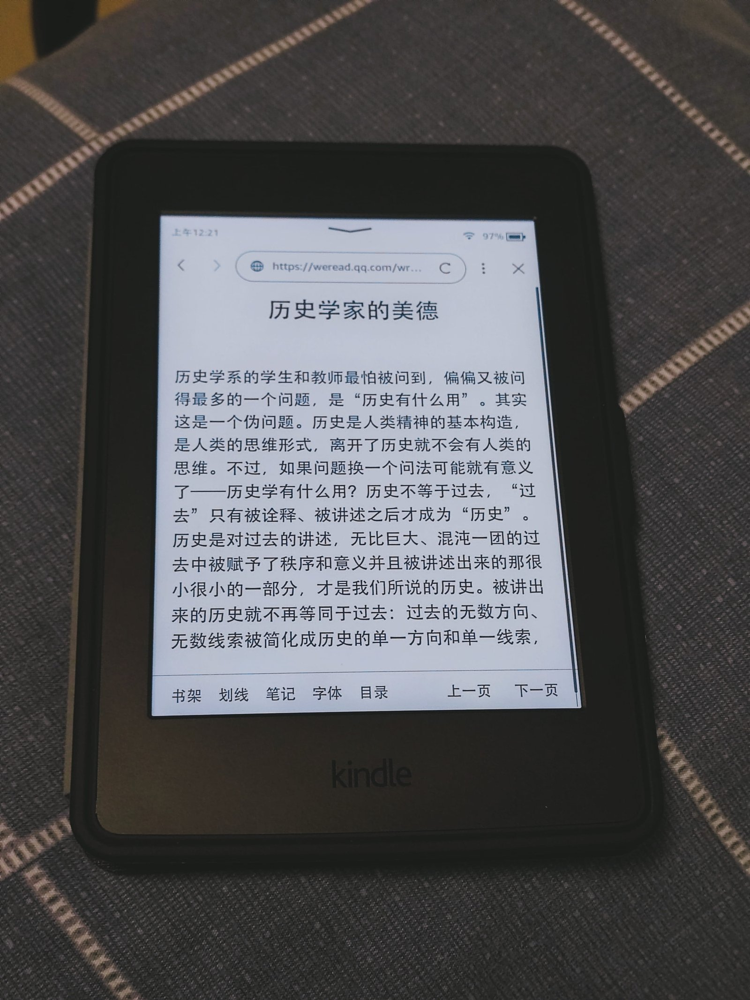

The Autopsy Report · Device #097
The Kindle Paperwhite, 11th Generation
The 2021 Paperwhite: a bigger 6.8-inch screen, USB-C at last, and weeks of battery. We haven't opened one — and its FCC paper trail is the thinnest of the batch.
What is this thing?
The Kindle Paperwhite (11th generation) is Amazon's mid-range e-reader, released in 2021 — the first major Paperwhite upgrade in three years. The headline changes: a larger 6.8-inch E Ink display, USB-C charging, longer battery life, and an adjustable warm light. Model numbers M2L3EK / M2L4EK (the M2L3EK identity was confirmed by Amazon Devices customer support in a retailer's Q&A). GeekWire Best Buy Q&A
Not yet on our bench
We don't own a Paperwhite, so nothing here comes from our hands: no disassembly, no board photos, no measurements. Everything below is built from public records — reviews, an iFixit disassembly guide, and the user manual. When a unit lands on our bench, we'll verify the hardware firsthand and update this page.
A short history
- 2018The 10th-generation Paperwhite adds waterproofing and Bluetooth audio — the bar the 11th gen has to clear. Good e-Reader
- September 2021Amazon announces the 11th-generation Paperwhite: 6.8-inch display, USB-C, adjustable warm light, and longer battery life — the first major upgrade in three years. GeekWire
- Late 2021Reviews land: a bigger screen and USB-C win praise; the device remains a single-purpose reader in a phone world. FoneArena Good e-Reader
- 2021–presentAn iFixit disassembly guide documents the internal layout for repairers. iFixit guide
The outside
A matte black slab with a flush 6.8-inch E Ink screen, a single power button, and a USB-C port — the port change alone was news after a decade of micro-USB. Waterproofing (IPX8) means the seams are sealed and the board inside gets a conformal coating. The photo below shows a Kindle Paperwhite; we could not verify from the photo alone that it is the 11th generation, so we present it as a line representative. GeekWire

The board
An iFixit disassembly guide walks through removing the electronics from the case — the board, battery, and display assembly — aimed at repair, not identification. No public source in our set names the SoC or memory parts at component level, and we have no unit of our own. iFixit guide
Under the microscope: the chips
What's on the board, what each part does, and how sure we are. Confirmed means a primary source (FCC exhibit or manufacturer document). Likely means well-corroborated public records.
| Chip | What it does | How we know | Dig deeper |
|---|---|---|---|
| No integrated-circuit identities for the 11th-generation Paperwhite are safely documented in the public records we reviewed. We could not verify an FCC filing for this model at all, and no independent teardown in our source set names its chips. We'd rather show you an empty table than a fabricated one — this section waits for the bench. | |||
The government's file on this reader
We could not verify an FCC filing for the 11th-generation Paperwhite (models M2L3EK/M2L4EK) in our research — no FCC ID surfaced in the sources we reviewed. The user manual does include the standard FCC compliance statement, which is all the regulatory paper we can honestly point to. User manual Manual (PDF)
If you can point us to the filing, we'll add it — and the bench will settle the rest.
Debug and service modes
Nothing about a debug header, serial console, or service mode for this hardware is documented in the public records we reviewed, and we claim nothing. Our posture throughout: we listen, we don't knock. If a bench unit ever reveals a diagnostic interface, we'll document it read-only — never bypasses, never credential or key extraction.
What public records show
- The 2021 Paperwhite's story is industrial design, not silicon: bigger screen, USB-C, warm light, more battery — the board is a footnote to the reading experience. GeekWire
- iFixit's guide shows a repair-friendly internal layout — the electronics come out of the case without a fight, which is more than many sealed gadgets offer. iFixit guide
- Model M2L3EK is confirmed by Amazon's own customer support; M2L4EK appears alongside it in retail records. Best Buy Q&A
What we haven't done
- No disassembly — we don't own a unit.
- No main-board component identification; the chip table above is intentionally empty.
- No verified FCC filing — the regulatory paper trail is an open question.
- No E Ink waveform, power, or battery measurements of our own.
By the numbers
- Model: Kindle Paperwhite, 11th generation (2021) · M2L3EK / M2L4EK
- Display: 6.8-inch E Ink, adjustable warm light
- Charging: USB-C · Waterproofing: IPX8
- FCC ID: not verified — unknown
- Main chips: unknown — awaiting the bench
Words to know
Every term this page uses, in plain English. No prior knowledge required.
- E Ink
- Electronic paper — a display that holds an image without power and reads like printed paper in sunlight. The battery lasts weeks because the screen barely sips energy.
- Warm light
- An adjustable front-light color temperature — whiter for day, amber for night reading.
- IPX8
- A waterproofing rating: the device survives immersion in water under defined conditions — read in the bath without fear.
- Conformal coating
- A thin protective film over a circuit board that seals it against moisture — standard in waterproof gadgets.
- FCC
- The Federal Communications Commission — the U.S. agency that regulates anything that transmits radio. Every wireless gadget sold here has to pass its tests first.
- FCC ID
- The ID the FCC assigns to each approved wireless product. Punch it into fccid.io and the whole public filing comes up.
Sources & confidence
- 6.8-inch display, USB-C, warm light, battery life, September 2021 announcement, first major upgrade in three years: GeekWire. Likely (contemporaneous press).
- M2L3EK model identity: Amazon Devices customer support via Best Buy Q&A. Likely.
- Review detail: FoneArena and Good e-Reader reviews. Likely.
- Internal layout: iFixit disassembly guide. Likely (repair guide, not component identification).
- Manual and FCC compliance statement: manuals.plus / manualspro transcriptions. Likely.
- FCC filing: not found in our research — honestly unknown, not silently skipped.
- Device photo: Wikimedia Commons, CC BY-SA 4.0 — a Kindle Paperwhite; generation unverified from the photo.
- Anything not listed here is unknown until the bench says otherwise. We'll say so, out loud, when that's the case.
Legal note. BareBoard is an educational project. This report is built entirely from public records — we own no Kindle hardware and performed no testing. We don't publish, host, or distribute firmware, keys, passwords, or credentials. Product names and trademarks belong to their respective owners and appear here only to identify the hardware. If you believe anything here infringes your rights, contact us and we'll address it promptly.